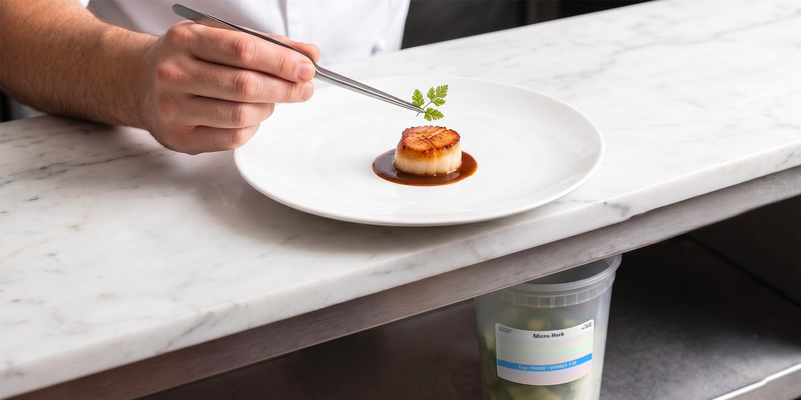

Fine Dining
Precision service, zero tolerance for ambiguity
Tasting menus and à la carte service create dozens of parallel prep paths—when labels are inconsistent, teams lose time verifying dates instead of executing.
FreshDot fits fine dining because it standardizes what “correct” looks like on the label, without asking cooks to slow down during critical pickup windows.
- Clearer dating and identification across garde manger, pastry, and hot line
- Color cues that support faster rotation during high-cover nights
- A shared format leadership can audit consistently across services